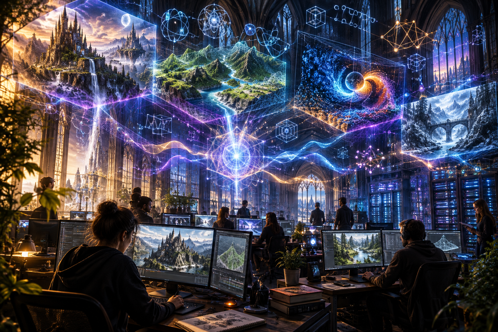

Beyond the Classroom: How Educational Gaming is Shaping a New Generation of Learners in 2026
From AI-powered design tools to award-winning classroom experiences, educational games are becoming central to how Generation Alpha learns and collaborates. We explore the players, tools, and social changes rewriting the future of schooling.
READ THE STORY ↗
Beyond Silicon: How Quantum Computing is Quietly Rewriting PC Game Development
In 2026, quantum processors aren't replacing your graphics card yet, but they're already changing how studios build worlds, physics, and possibilities. We explore the present reality—and near future—of quantum-powered game development.
READ THE STORY ↗
Classic Worlds, New Realms: How MMORPG Legends Are Finding New Life in 2026
A new wave of reimagined classic MMORPGs is captivating both nostalgic veterans and new adventurers. Developers are skillfully updating these persistent online worlds—introducing vast technical improvements, modern entry points, and community strategies—without sacrificing the essence fans love. Here’s how icons like World of Warcraft and Final Fantasy XI are reclaiming their thrones.
READ THE STORY ↗
Crossing Boundaries: How Crossplay is Expanding the RPG Experience in 2026
Cross-platform play has become a transformative force in modern RPGs, breaking technical and social barriers. We investigate how true crossplay is changing who plays, how we play, and the future of interconnected fantasy worlds.
READ THE STORY ↗
Cloud Co-Op: How Streamed Gaming Is (and Isn’t) Changing Cooperative Console Play
As cloud gaming expands its reach in 2026, co-op console experiences are both empowered and hampered by its unique technical and design realities. Is cloud co-op the next frontier—or still stuck in the waiting room?
READ THE STORY ↗